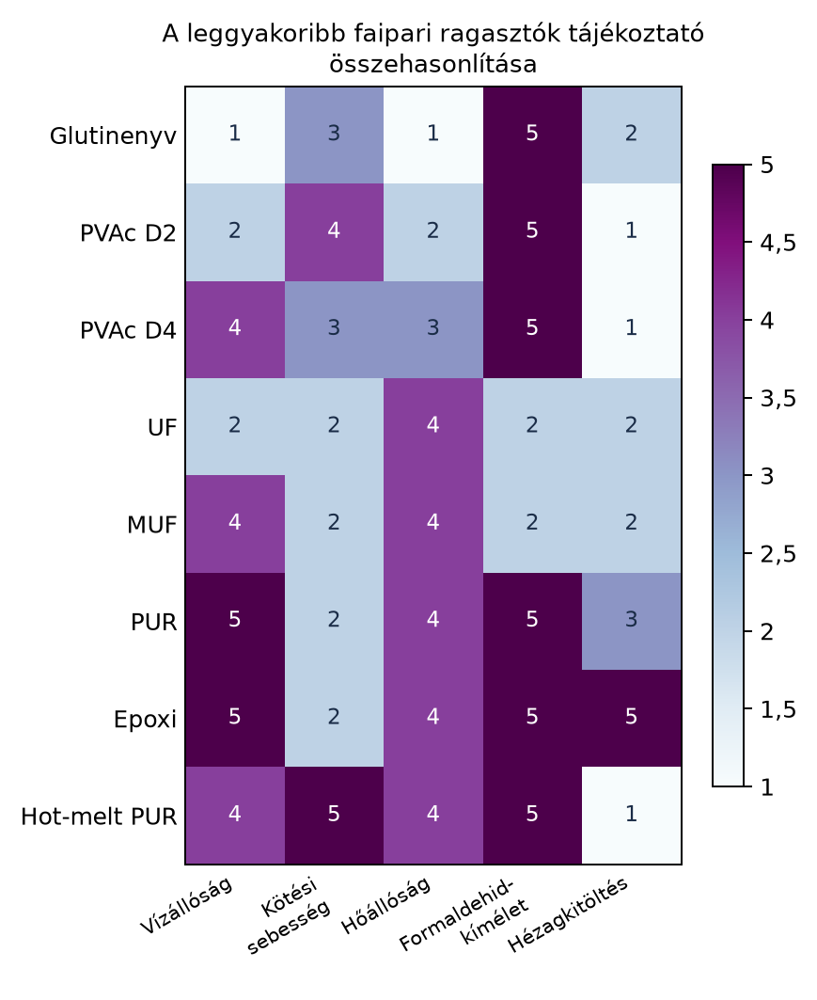

A műhelyben a ragasztás a leggyakoribb kötési mód, mégis sok hiba nem a ragasztáskor, hanem a ragasztó kiválasztásakor keletkezik. Ha egy konyhabútor élére rossz ragasztót viszünk fel, az élzárás felválik; ha egy kültéri spalettát beltéri D2-es ragasztóval készítünk, az első esős évben szétnyílik a kötés. A ragasztó nem „csak egy anyag”, hanem egy rendszer: a faanyag felülete, a ragasztóréteg, a présnyomás és az idő együtt dolgozik. Ebben az alfejezetben megtanulod, miért tapad a ragasztó, milyen ragasztófajták vannak, és melyik paraméter mit jelent a műszaki adatlapon.
A fa nedvességtartalmának szerepét a A faanyag nedvességtartalma: mérés és számítás alfejezetben tanultad; a ragasztók biztonsági adatlapjának olvasását a Faipari hulladékok, veszélyes anyagok és a biztonsági adatlap alfejezet alapozta meg. Továbbvitt eredmény. Az itt bemutatott ragasztófajtákat, D-osztályokat és időparamétereket használjuk a ragasztási technológiában, a furnérozásnál, az élzárásnál, a szerelésnél és a padlóburkolatok ragasztásánál.
Képzelj el két, egymásra préselt tölgydeszkát. A ragasztó vékony filmje a két felület között van. A ragasztó egyrészt behatol a fa pórusaiba, másrészt nedvesíti a fa felületét, harmadrészt saját anyagában megszilárdul. Ha a két deszka szétválik, az elválás helye sokat elárul: ha a ragasztórétegben válik el, a ragasztó belső szilárdsága (kohézió) volt gyenge; ha a fa és a ragasztó határán, akkor a tapadás (adhézió) hiányzott; ha a fa rostrétegében szakad, akkor a ragasztás erősebb volt, mint maga a fa.
Az alábbi ábra a gyakori faipari ragasztófajtákat hasonlítja össze tájékoztató pontszámokkal. A pontszámok 1–5 skálán szemléltetnek, és minden oszlopban a magasabb pont (sötétebb cella) a kedvezőbb tulajdonság; a formaldehid-oszlop ezért az alacsony emissziót (formaldehid-kíméletességet) pontozza. Az értékek terméktől függenek, ezért a gyártói adatlapot mindig ellenőrizd.

Adhézió a ragasztó és a fa felülete közötti tapadási erő. Akkor jó, ha a ragasztó jól nedvesíti a fa felületét, vagyis vékony, összefüggő filmet képez rajta, nem gyöngyözik vissza.
Kohézió a ragasztó saját anyagán belüli szilárdság. Ha a ragasztóréteg törékeny vagy puha, a kötés akkor is gyenge lehet, ha az adhézió kiváló.
Nedvesítés azt jelenti, hogy a folyékony ragasztó szétterül a fa felületén. A por, zsír, gyanta vagy túl magas fanedvesség rontja a nedvesítést.
Behatolás a ragasztó bejutása a fa pórusaiba, sejtüregeibe. A túl sűrű ragasztó nem hatol be, a túl híg pedig felszívódik, és „kiéheztetett” ragasztóréteget hagy.
Kötésmechanizmus lehet fizikai vagy kémiai. Fizikai kötésnél a ragasztó megszárad, lehűl vagy oldószert veszít (pl. PVAc, glutinenyv, oldószeres kontaktragasztó). Kémiai kötésnél térhálósodás, polimerizáció vagy nedvességre kötés megy végbe (pl. PUR, epoxi, UF/MUF). Sok ragasztóban a két mechanizmus keveredik.
Régi, természetes fehérjealapú ragasztó. Vízben melegítve oldható, lehűlve kocsonyásodik, száradva kemény lesz. Előnye, hogy hővel újra lágyítható, ezért a restaurálásban használják. Nem vízálló, ma már a tömegtermelésben ritka.
A leggyakoribb fehér faragasztó. Vizes diszperzió, a víz elpárolog vagy a fa beszívja, a polimer film összeáll. Beltéri bútorokhoz, székekhez, keretkötésekhez jó. Létezik D2, D3 és D4 osztályú változat. A D4-es PVAc kültéri, vízálló. Előnye: könnyen kezelhető, jól csiszolható, rugalmas. Hátránya: nem hézagkitöltő, hosszú présidőt igényel, fagyérzékeny.
Hőre keményedő, térhálósodó ragasztók. Az UF olcsó, kemény, de formaldehidet tartalmazhat, és vízállósága korlátozott. A MUF jobb hő- és vízállóságú, furnérozásra, rétegelt lemez gyártására, hajlított rétegelt alkatrészekhez használják. A préseléshez általában hő és idő kell.
Egykomponensű, nedvességre kötő ragasztó. A levegő vagy a fa nedvességtartalmának hatására térhálósodik. Kiváló vízállóság, rugalmasság, D4 osztály. Használják kültéri asztalosipari termékekhez, élzáráshoz, szerkezeti ragasztáshoz. Hátránya: nedvességre érzékeny, tárolásnál levegőtől elzárva kell tartani, kikeményedése lassabb lehet, a bőrre kerülve nehezen távolítható el.
Kétkomponensű, nagyon nagy szilárdságú, jó hézagkitöltő. Akkor használjuk, ha a kötés terhelt, vagy ha a rést ki kell tölteni. Vízálló, vegyszerálló, de drágább, és a keverési arányt pontosan kell tartani.
Oldószeres vagy vizes diszperziós ragasztó, amelyet mindkét felületre fel kell hordani, majd a ragasztó nyitott ideje alatt hagyni kell levegőzni, és a két felületet egymáshoz nyomni. Azonnal tapad, de nem hézagkitöltő, és a ragasztott felületek nem igazíthatók. Laminátum, furnér, padlóburkolat ragasztására használják.
Hőre lágyuló ragasztó, amelyet olvasztva visznek fel, majd lehűlve megköt. Az EVA hot-melt gyors, élzáró gépeken gyakori, de hő- és vízállósága korlátozott. A PUR hot-melt nedvességre térhálósodik, így a kezdeti gyors kötés után a végső szilárdság és hőállóság jobb; konyhabútor-élzáráshoz, magas igényű bútorlapokhoz használják.
A ragasztó műszaki adatlapján az alábbiakat kell keresni:
Szabvány. A faipari ragasztók vízállóságát az MSZ EN 204 szerint D1–D4 osztályba sorolják; a D-osztály a ragasztási kötés vizsgálati osztálya. A D1 beltéri, száraz környezetre való; a D2 beltéri, rövid idejű, alkalmi nedvességnek vagy magas páratartalomnak ellenálló; a D3 gyakori, rövid idejű vízterhelést vagy magas páratartalmat bír, időjárásnak közvetlenül nem kitett kültéri helyre (pl. fedett előtető, bejárati ajtó belső oldala) is megfelel; a D4 gyakori víznek és időjárásnak kitett kültéri szerkezethez csak akkor alkalmas, ha a felületet megfelelő bevonat védi. A pontos vizsgálati feltételeket a szabvány tartalmazza. (A D-osztályok pontos feltételei ellenőrizendő az aktuális szabványban.)
Példa: beltéri szekrénykerethez D2 is elegendő, de fürdőszobai tükörkerethez inkább D3; kültéri ablakhoz D4 szükséges, felületvédelemmel (bevonattal) ellátva, mert a D4 kötés is csak védett felülettel időjárásálló (ellenőrizendő: MSZ EN 204 aktuális kiadása).
Az UF, MUF és egyes régebbi ragasztók szabad formaldehidet tartalmazhatnak, vagy tárolás közben felszabadíthatnak. A formaldehid szúrós szagú anyag; a CLP-rendelet szerint rákkeltő (Carc. 1B) és bőrérzékenyítő (ellenőrizendő: aktuális harmonizált besorolás). A faalapú lapoknál, ragasztóknál a gyártó megadja a formaldehid-kibocsátási osztályt, gyakran E1 jelöléssel. A faalapú termékek és bútorok kibocsátását a REACH-rendelet korlátozza (ellenőrizendő: (EU) 2023/1464 és határértéke); az E1 jelölés ma már csak minimumszintnek tekinthető. Az E1 határérték és az aktuális osztályozás ellenőrizendő. A ragasztó kiválasztásakor beltérben előnyben részesítjük az alacsony emissziójú termékeket, és a munkahelyen elszívással, szellőztetéssel csökkentjük a gőzterhelést.
Egészségvédelem. A ragasztóanyagokkal végzett munka során a biztonsági adatlap az irányadó: szellőztess, viselj a gyártó által előírt kesztyűt, védőszemüveget, indokolt esetben légzésvédőt (pl. PUR, epoxi, formaldehid-tartalmú ragasztó gőzénél, csiszolásakor). Tilos a ragasztót lefolyóba önteni, tilos a lejárt, fagyott vagy kicsapódott keveréket felhasználni, és tilos az oldószeres ragasztót nyílt láng közelében használni. A hézagkitöltő PUR hab nem azonos a PUR faszerkezeti ragasztóval – ne cseréld fel. A keletkező hulladék a biztonsági adatlap szerint veszélyes hulladék lehet.
Egy asztalosnövendék 300 g epoxigyantát mér ki. A gyártó adatlapja szerint a keverési arány tömegrészben 100 : 50 (gyanta : térhálósító). Mennyi térhálósítót mérjen hozzá?
Megoldás. A tömegarány szerint:
A kikevert összes tömeg:
Ellenőrzés. A 450 g össztömegben a gyanta részaránya , a térhálósítóé , ami 2:1 arányt ad. ∎
Egy PVAc ragasztó nyitott ideje 8 perc, zárt ideje 5 perc. A munkás 20 db keretsarok kenését 15 perc alatt tudja elvégezni. Elég-e mind a 20 db-ot egyszerre bekenni, ha a prés zárása a kenés befejezése után 2 perccel történik?
Megoldás. A kenés kezdetétől a prés zárásáig legfeljebb a nyitott + zárt idő telhet el:
A tényleges idő a kenés 15 perce plusz a zárás 2 perce:
Mivel , az első darabok ragasztója már bőrösödik, mire a prés zár. A 20 db-ot két adagban kell kenni, vagy párhuzamosan kell dolgozni. ∎
Beérkezéskor: ellenőrizzük a termék azonosítóját, a gyártói adatlapot, a lejárati időt, a csomagolás sértetlenségét és a tárolási hőmérsékletet. PVAc-nál ellenőrizzük, hogy nem fagyott-e meg; PUR-nál, hogy nem volt-e levegőnek kitéve.
Felhasználás előtt: a ragasztót szemrevételezéssel és tapintással ellenőrizzük. A kicsapódott, csomós, bőrösödött, erősen besűrűsödött anyagot ne használjuk. Kétkomponensű ragasztónál mérleggel ellenőrizzük a keverési arányt.
Próbakötés: bizonytalan esetben készítsünk próbadarabot, és a kötés megszilárdulása után vizsgáljuk a szilárdságot és a törésképet. A törésképből következtethetünk adhéziós vagy kohéziós hibára.
| Hiba | Lehetséges ok | Helyes gyakorlat |
|---|---|---|
| Gyenge kötés, a ragasztó a fáról leválik | Poros, zsíros, túl nedves felület | Felületet csiszolni, portalanítani, fanedvességet ellenőrizni |
| A kötés a ragasztórétegben szakad | Túl vastag ragasztóréteg, lejárt vagy fagyott ragasztó | Megfelelő felhordás, friss ragasztó, előírt hőmérséklet |
| Kültéri alkatrész szétnyílik | D2-es ragasztó használata | D4-es ragasztó választása |
| Élzárás felválik | Nem megfelelő hot-melt, túl alacsony hőmérséklet | PUR hot-melt vagy megfelelő EVA, előírt olvasztási hőmérséklet |
| Fejfájás, szúrós szag | Formaldehid-tartalmú ragasztó szellőzés nélkül | Elszívás, szellőztetés, alacsony emissziójú termék |
| Kétkomponensű ragasztó nem köt meg | Rossz keverési arány, lejárt komponens | Adatlap szerinti tömegarány mérése, friss komponens |
Egy asztalostanuló kültéri spalettát készített. A műhelyben kapott D2-es PVAc fehér ragasztót használt, mert az volt kéznél. A spaletta szépen összeállt, de az első őszi eső után a keretsarkoknál a ragasztóréteg felpuhult, a csapok megindultak. A reklamáció kivizsgálásakor kiderült: a ragasztó adatlapján D2 osztály szerepelt, tehát csak beltéri, száraz környezetre volt alkalmas. A hiba tanulsága: a ragasztóválasztás nem a ragasztó színétől vagy a doboz méretétől függ, hanem a használati helytől és a D-osztálytól. Javításhoz D4-es PVAc vagy PUR ragasztót kell használni, a régi ragasztóréteget pedig maradéktalanul el kell távolítani.
1. feladat (A) Sorold be a ragasztókat aszerint, hogy fizikai vagy kémiai kötésűek: PVAc, glutinenyv, PUR, epoxi, EVA hot-melt.
2. feladat (A) Párosítsd a D-osztályokat a felhasználási hellyel: D1, D2, D3, D4 – beltéri száraz, beltéri alkalmi nedvesség, gyakori rövid vízterhelés, kültéri időjárás.
3. feladat (B) Egy ragasztó műszaki adatlapján ezt látod: nyitott idő 10 perc, zárt idő 6 perc, préselési idő 20 perc, fazékidő 45 perc. Értelmezd, mit jelentenek ezek a munkaszervezésben.
4. feladat (B) Válassz ragasztót a következő helyzetekhez indoklással: (a) beltéri bútorlap élzárása; (b) kültéri ablak sarokcsapozása; (c) laminált padlóhoz szegély ragasztása.
5. feladat (C) Egy konyhai munkalap élzáró PUR hot-melt ragasztóját a felbontás után nyitva hagyták egy hétig. Milyen hiba várható, és miért?
6. feladat (D) Egy epoxi ragasztó keverési aránya 100 : 40. A tanuló 500 g gyantát mér ki. Számítsd ki a szükséges térhálósító tömegét, az összes kikevert mennyiséget, és ellenőrizd az arányt.
Önellenőrzés – válaszok
1. feladat megoldása. Fizikai: PVAc (víz eltávozik), glutinenyv (víz eltávozik, hűl), EVA hot-melt (lehűl). Kémiai: PUR (nedvességre térhálósodik), epoxi (térhálósodás).
2. feladat megoldása. D1 – beltéri száraz; D2 – beltéri alkalmi nedvesség; D3 – gyakori rövid vízterhelés; D4 – kültéri időjárás.
3. feladat megoldása. Nyitott idő 10 perc: a felhordott ragasztónak 10 percen belül érintkeznie kell a másik felülettel. Zárt idő 6 perc: az összeillesztés után 6 percen belül présnyomást kell kifejteni. Préselési idő 20 perc: a présben ennyi ideig kell tartani. Fazékidő 45 perc: a kikevert ragasztót 45 percen belül fel kell használni. A munkaszervezésben ezek adják a ciklusidőt.
4. feladat megoldása. (a) PUR hot-melt vagy EVA hot-melt; PUR hot-melt a jobb hő- és nedvességállóság miatt. (b) D4-es PVAc vagy PUR; kültér miatt vízálló ragasztó kell. (c) Kontaktragasztó vagy megfelelő diszperziós padlóragasztó; a kontaktragasztó azonnali tapadása miatt praktikus.
5. feladat megoldása. A PUR hot-melt nedvességre kötő ragasztó. A nyitva hagyott csomagolásban a levegő páratartalma beindítja a térhálósodást, ezért a ragasztó besűrűsödik, bőrösödik, és az élzáró gépben már nem dolgozható megfelelően. A kötés minősége is romlik.
6. feladat megoldása.
Ellenőrzés: a gyanta aránya , a térhálósítóé , ami 5:2 = 2,5:1, azaz 100:40 arány. ∎
A ragasztás alapja a nedvesítés, a behatolás, az adhézió és a kohézió. A ragasztó köthet fizikai úton (víz- vagy oldószer-elpárolgás, lehűlés) vagy kémiai úton (térhálósodás, nedvességre kötés). A leggyakoribb faipari ragasztók a PVAc diszperzió, a glutinenyv, az UF/MUF gyanták, a PUR, az epoxi, a kontaktragasztó és a hot-melt (EVA, PUR). A ragasztóválasztásnál a használati helyhez tartozó D-osztályt kell nézni: D1 beltéri száraz, D2 beltéri alkalmi nedvesség, D3 gyakori rövid vízterhelés, D4 kültéri. A műszaki adatlapról ki kell olvasni a nyitott időt, zárt időt, préselési időt, fazékidőt, kötési hőmérsékletet. Az UF/MUF formaldehid-kibocsátására, a PUR és epoxi egészségvédelmére, a PVAc fagyérzékenységére és a PUR nedvességérzékenységére különösen figyelni kell. Továbbvitt eredmény. A ragasztófajták, D-osztályok és időparaméterek ismeretét a ragasztási technológiában, a furnérozásban, az élzárásban, a szerelésben és a padlóburkolatok ragasztásánál használjuk fel.
Forrástípusok: MSZ EN 204 (ragasztók vízállósági osztályai), MSZ EN 205 (ragasztási kötések vizsgálata, ellenőrizendő), faipari szakkönyvek, ragasztógyártók műszaki adatlapjai és biztonsági adatlapjai, CLP- és REACH-rendelet, faalapú lapok formaldehid-emissziós szabványai.
Ellenőrizendő: a D1–D4 osztályok pontos vizsgálati feltételei, az aktuális formaldehid-határérték és emissziós osztály, a gyártói nyitott/zárt/preselési idők és hőmérsékleti tartományok, valamint a jogszabályszámok. A táblázatbeli tájékoztató pontszámok terméktől függenek, nem szabványértékek.